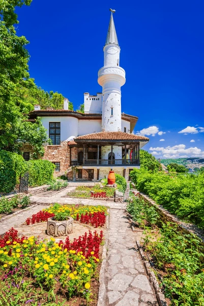
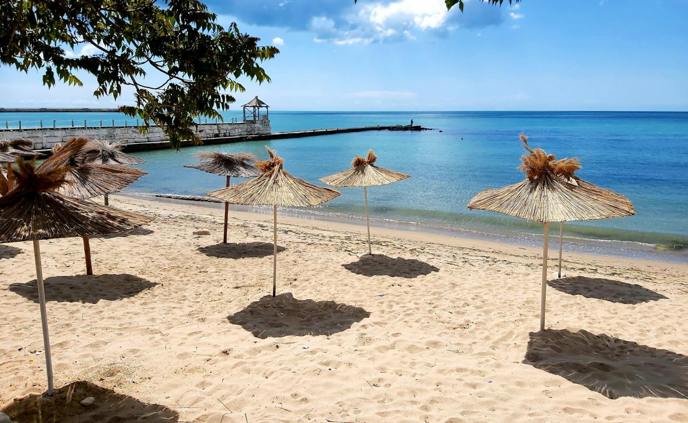
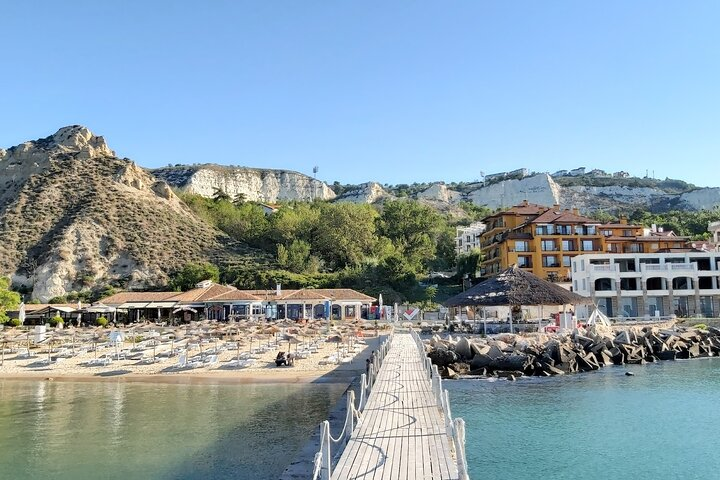

Feil passord
```Du er invitert til vårt bryllup
Til familie og venner,
Vi gifter oss i Bulgaria, ved Svartehavet — i området rundt Balchik og Albena. Silje har familie i Bulgaria, og det er et sted som betyr mye for oss. Derfor ønsker vi å samle familie og venner akkurat her.
Vi håper dere har lyst til å komme og feire sammen med oss. Datoen er ikke helt satt ennå, men bryllupet blir i sensommeren 2027.
Nærmeste flyplass er Varna. Mer praktisk informasjon kommer etter hvert.
Foreløpig
Slik tenker vi det nå:
En kveld før
Strandfest og get-together. Kanskje en båttur, om vi får tid.
Bryllupsdagen
Vielse og fest på Black Sea Rama, like utenfor Balchik.
Vi vet det er et stykke å reise. Vi prøver å legge det opp slik at det går både å gjøre det til en ferieuke — eller komme bare til helgen.
Mer praktisk informasjon kommer.
Området

Mellom Balchik og Kaliakra ligger en bit av kysten vi har blitt glad i. Hvite klipper, varme kvelder, hav.
Bygget av en dronning som elsket hagene sine. Lett å bruke en formiddag her.

Hvite hus klatrer opp kalksteinklippene. Promenaden går langs vannet.

Stille bukter, mykt vann. Solnedgangene er av den slag man husker.
Hvis dere blir lenger
Steder og opplevelser vi er glade i. Plukk det dere har lyst på.
Albena · Strand
Lange strender, varmt vann, late dager. Albena er gjort for sommer.
Black Sea Rama · Sport
Banen på Black Sea Rama er Bulgarias første mesterskapsbane. Verdt en runde.
Varna · Byliv
Storby med havn, kafeer og park. Bra for en dag eller kveld.
Kysten · Mat
Skjell, fersk fisk, lette salater. Kystmat på sitt beste.
Varna · Natur
Underlige steinformasjoner ute på sletten. Best ved solnedgang.
Balchik · Kveld
Sjøpromenaden i Balchik. Restauranter, barer og kveldsmusikk.
Geografi
Trykk på markørene for detaljer.
Mat
Tre favoritter. Resten finner dere selv.
Skjellfarm
Kaliakra-bukten
Skjell rett fra havet. Spis ved bukten, gjerne en kveld.
Fisk
Golden Sands
Bryggen, båtene, fisk fra Svartehavet.
Lokal mat
Sjøpromenaden
Mange små steder langs promenaden. Velg en med utsikt.
Påmelding
Helst så snart dere vet — det hjelper oss å planlegge.